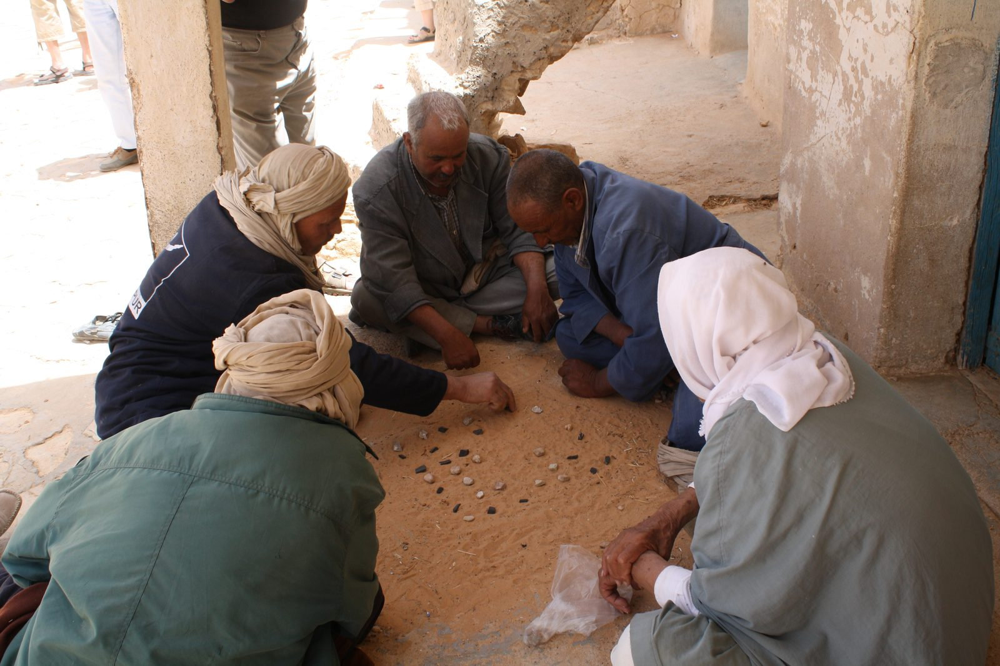

From Sand to Screen: Can Kharbga Become North Africa's Next Great Digital Strategy Game?
A Kogia Group project concept for preserving a living game, respecting its regional variants, and rebuilding it for mobile, web, competition, and play.

{kind=link}
In Médenine, the board does not need to come from a factory. A hand smooths the earth, forty-nine small hollows appear, and stones of two colours become opposing forces. Around that temporary battlefield, players lean forward. The equipment is modest; the thinking is not.
Kharbga—also written Kharbaga, Kherbga, or Khribga—is a family of North African abstract strategy traditions. In the 7×7 form strongly associated with southern Tunisia, each player commands twenty-four pieces. The central space is left empty. Once the board is prepared, pieces move one orthogonal step at a time and captures are made by trapping an enemy between two friendly pieces. A single opening can release a chain of consequences.
For generations, the game has also been a social room without walls: a reason to sit, talk, calculate, tease, teach, and return for a rematch. That makes digitising Kharbga more ambitious than programming forty-nine cells. The real task is to translate a living cultural practice into a product without flattening it into "another checkers app."
This is the first Kogia Group game concept: a smooth, characterful mobile and web experience that begins in Tataouine, Médenine, and Djerba, then builds connections with players and cultural partners in Algeria, Libya, and Morocco. Its purpose is not to replace the stones in the sand. It is to give that circle of players another place to form.
First, we must identify the game correctly
Calling Kharbga "North African chess" is useful as a quick invitation, but inaccurate as a definition. It has no chess pieces, no checkmate, and no single royal unit in the southern Tunisian 7×7 rules. Nor is it Go, although all three are deterministic, information-rich games in which position and anticipation matter more than luck.
Kharbga is better understood as its own strategy tradition—and as a name used for more than one related form.
Fait Published descriptions document a Tunisian and Libyan game related to seega/siga: a square board, a placement stage, orthogonal movement, and capture by custodial interception—sandwiching one hostile piece between two friendly ones. Other descriptions, especially for forms associated with Algeria and the western Maghreb, place Kharbaga in the zamma/alquerque family: movement follows a lined board, capture occurs by jumping, and a piece may be promoted to a powerful "Mullah" or "Sultan."
These accounts should not be forced into one artificial rulebook. They indicate a regional family with names and rules that can shift by place, age group, and community.
| Tradition to document | Common board description | Main capture logic | Product treatment |
|---|---|---|---|
| Southern Tunisian / related Libyan form | 7×7 cells; 24 pieces per player | Trap an opponent orthogonally between two allies | Launch rule set and oral-history priority |
| Smaller seega-related forms | Often 5×5; local counts vary | Custodial capture | Tutorial and fast-match mode after validation |
| Algerian / western Maghreb zamma-related forms | Often a lined 5×5 intersection board; variants exist | Leap capture; some versions promote a piece | Separate named regional rules, never silently mixed |
| Local household or village rules | Variable | Agreed by players | Community rulebook archive and custom rooms |
Morocco belongs in the research and community map, but this first article should not claim that the exact Médenine 7×7 rule set is a standard Moroccan game. Sources more clearly document related Moroccan alquerque-style games such as Fetaix and Felli, while western North African usage of the Kharbga name can refer to zamma-like variants. The honest product opportunity is therefore larger than cloning one board: build a trustworthy platform for a family of Maghreb strategy games, beginning with Kharbga as played and remembered in southern Tunisia.
A battlefield in metaphor—not a proven military invention
The language of Kharbga is martial. Pieces may be called soldiers, faris (horsemen), or, in Tunisian speech, klab ("dogs"). Strategy involves attack, defence, protected zones, sacrifice, encirclement, and reading danger. A Tunisian cultural workshop booklet describes the game as preparation for war and says it was used to identify a capable war leader.
That is a powerful tradition, but it is not yet enough to prove that ancient warriors invented Kharbga, or that it is older than chess and Go. One Tunisian account says the date of origin is difficult to establish and reports a theory connecting it to the era of the beys and Hilalian inheritance. The Digital Ludeme Project's database describes comparable forms as modern documentation and notes that seega is documented from the nineteenth century, while likely being older.
A serious article must preserve the distinction:
- Documented: Kharbga is a traditional North African strategy game with strong contemporary presence in southern Tunisia and related regional forms.
- Reported tradition: some cultural accounts connect its strategic purpose with warfare and leadership selection.
- Not established by the sources reviewed: a precise inventor, a precise creation date, or proof that Kharbga predates chess or Go.
This uncertainty does not weaken the story. It gives the project a research mission: record what elders, players, craftspeople, historians, and associations know before more local knowledge disappears.
How the 7×7 Kharbga game works
The following is a clear baseline compiled from the Kharbga Game Network, a Tunisian cultural workshop rulebook, and reporting from players in Tunisia. Local rules must still be confirmed during field interviews before being declared "official."
Starting with an empty 49-cell board, players alternate placing two pieces at a time — 24 each. The central cell, called the malha in one documented rule set, remains empty. Placement is not administration before the "real" game: every stone defines future corridors, traps, safe groups, and sacrifices.
A piece moves to an adjacent empty cell horizontally or vertically — not diagonally. The first move uses the empty centre to open the position.
If a move traps an opposing piece in a straight line between two of the moving player's pieces, the trapped piece is removed. Some documented rules require the same piece to continue if another capture is available, creating a capture chain.
Victory by eliminating enough opposing pieces, immobilising the opponent, or holding more pieces when play is blocked. A tied count can produce a draw.
The centre has a special status in some rules: a piece moved onto it cannot be captured. Other edge cases—including whether two or three pieces can be taken in one formation, safe-piece exchanges, forced continuation, blocking, and end scoring—must be represented as explicit toggles until field research establishes which communities use which rules. The digital game should show the active victory condition before every match: no player should discover a local rule only after losing to it.
The Kogia proposal: heritage mode and evolution mode
Preservation and invention can coexist if they are labelled honestly.
Heritage Mode should reproduce a documented community rule set with its place, contributors, terminology, and revision history. It should avoid invented powers, random rewards, or effects that obscure the underlying strategy.
Kogia Challenge Mode can experiment. Here, animated characters, seasonal boards, cooperative puzzles, special abilities, and new victory conditions can extend the game for modern audiences. Every changed rule should be visually marked so nobody mistakes invention for tradition.
The proposed "five captures" mechanic belongs here. A normal piece that completes five consecutive captures—either within one legal chain or across tracked turns, depending on play-testing—could become an Ace, Raider, or locally named champion, and gain expanded movement. A broken streak returns the piece to regular status.
The idea is exciting, but "move anywhere" is probably too powerful without constraints. Three prototypes should be tested:
- Free Step: the champion may move one cell in any of eight directions.
- Long Stride: it may move any number of empty orthogonal cells, but captures remain traditional.
- Once-per-match Command: after promotion, it can relocate once to any empty non-central cell.
Each version changes the game's balance differently. The right choice cannot be decided by description alone; it requires simulation, expert play, and repeated matches with newcomers.
The hardest work is design
The code is substantial, but the hardest building begins before coding: choosing what the product means.
The design team must turn oral and variable rules into a clear system without falsely declaring one village's practice universal. It must make forty-eight similar pieces readable on a phone. It must preserve calculation while making the experience lively. It must honour the people in the photograph without treating culture as decoration.
The solution is a layered design system:
| Layer | Design requirement |
|---|---|
| Cultural | Regional names, oral histories, contributor credits, Arabic/French/English terminology, source notes |
| Rules | Versioned rule sets, visible match settings, deterministic replay, dispute-free capture explanations |
| Interface | Instant legal-move feedback, readable 7×7 board, undo in practice mode, reconnect support, accessibility |
| Character | Funny expressions and reactions that never hide board state or slow expert play |
| Competition | Ranked and unranked rooms, local tournaments, spectators, clocks, anti-cheat and match records |
| Learning | Interactive placement lessons, capture puzzles, explainable hints, regional strategy stories |
The pieces can have comic personalities—brave, nervous, proud, sleepy, overconfident—while remaining functionally equal in Heritage Mode. They might celebrate a trap, panic when exposed, or whisper a warning during a tutorial. Competitive mode should allow all animation to be shortened or disabled.
The Kogia character world can act as guide rather than conqueror. A curious deep-sea Kogia host can "dive" into hidden strategies, surface community stories, and release a playful "cloud of ideas" when introducing experimental rules. Local human knowledge remains the authority.
What the mobile and web product requires
At the centre should be one deterministic rules engine used by mobile apps, the responsive web game, bots and puzzles, tutorials, replays, and the match validator alike. If each interface implements captures separately, rule differences will become bugs.
The first product release needs:
- responsive web play and installable mobile apps;
- guest play, private rooms, local pass-and-play, and account-based online matches;
- reconnection and server-authoritative match state;
- Arabic with right-to-left support, Tunisian terminology, French, and English;
- accessible colours, shapes, sound cues, reduced motion, and scalable text;
- a tutorial that teaches setting, movement, sandwich capture, chains, blocking, and victory;
- bots at several levels, including a transparent "why this move?" teaching bot;
- complete match replays and shareable challenge positions;
- moderation, reporting, privacy protections, and age-appropriate community features;
- telemetry that measures tutorial completion, abandoned matches, rule confusion, and rematches without collecting unnecessary personal data.
The artificial-intelligence problem is interesting because the placement phase creates a large decision space before movement begins. Early bots can use rule-based heuristics and search; stronger agents can later be trained through self-play. But a superhuman opponent is not the first priority. A bot that teaches why a formation is dangerous will preserve more knowledge than one that merely wins.
A launch born in the south, connected across the Maghreb
The first release should not begin everywhere at once. It should begin where the product can listen closely.
Médenine is the documentary anchor: the photograph above records players there in 2010, and current reporting continues to associate Kharbga with southern Tunisia. Tataouine offers a neighbouring southern network for player interviews, school or youth workshops, cafés, cultural groups, craftspeople, and pilot tournaments. Djerba, within Médenine Governorate but culturally and economically distinctive, can connect residents, visitors, designers, and digital communities. These two areas are proposed pilot locations, not claimed by this article as proven centres of one identical rule set.
The second circle is regional:
- Algeria: document Aurès play and distinguish 7×7 custodial forms from zamma-like, jump-capture Kharbaga traditions reported under similar names.
- Libya: collaborate on the closely related game also identified as seiza/siza in Tunisian reporting, and verify terminology and rules directly with Libyan players.
- Morocco: research related alquerque-family games and local use of the Kharbga name; invite Moroccan historians and players to define what belongs in a Moroccan collection rather than exporting Tunisian rules under a regional label.
Documentary anchor: field interviews, oral-history recording, first rule dossier.
Workshops, cafés, cultural groups, pilot tournaments.
Versioned community rule sets, national friendly leagues.
Named regional variants with local reviewers.
Research track defined with Moroccan players and historians.
The practical launch format could combine "memory tables" with digital play. Elders play using sand, stones, or a crafted board while a facilitator records the position, names, disputed rules, expressions, and stories. Young players reproduce the match on phones. Designers watch where the interface fails. Each session produces both product evidence and a cultural record—with informed consent and contributor credit.
Challenges should create stories, not chores
A modern Kharbga platform needs repeatable reasons to return, but retention should emerge from mastery and community rather than manipulative reward loops.
Good challenges include:
- survive a dangerous opening with no losses for five turns;
- create a double threat during the setting phase;
- solve a documented position from a Médenine player;
- win with a regional rule set new to you;
- replay a famous community match and find a different line;
- complete a Kogia Challenge Mode champion transformation;
- represent a town in a friendly seasonal league;
- contribute a verified local term or rule explanation to the archive.
Cosmetics can celebrate architecture, weaving, metalwork, pottery, desert and island landscapes, but they should be commissioned with local creators and explained. Cultural identity is not a texture pack.
The real product is trust
Kharbga's physical simplicity is deceptive. In sand, a rule disagreement can be resolved by the people sitting in the circle. Software cannot rely on that flexibility. It must decide exactly what happens after every move. That is why the project's first major deliverable should not be an app-store build. It should be a versioned rules and culture dossier, reviewed by players from the launch communities.
Kogia Group can then publish what it learns: regional boards, playable rule definitions, interviews, terminology, prototype results, and corrections. The community should be able to challenge an inaccurate rule and see who approved a revision. This turns preservation from a marketing claim into a visible process.
If the project succeeds, an experienced player in Médenine will recognise the intelligence of the game, a child in Djerba will understand a capture within minutes, an Algerian player will be able to select the rule set they actually know, a Libyan contributor will see their terminology credited, and a Moroccan researcher will not be told that all Maghreb traditions are the same.
The goal is not to drag an "old game" into modernity. Kharbga is already alive whenever people gather to play it. The goal is to design a digital table large enough for the next generation to join.
Project blueprint
| Stage | Main output | Acceptance test |
|---|---|---|
| 1. Field research | Recorded rules, terms, stories, and consented media from Médenine, Tataouine, and Djerba | At least three independent player groups reviewed per proposed rule set |
| 2. Rules specification | Machine-readable, versioned 7×7 Heritage rule set | Every legal move, capture, chain, block, draw, and edge case has a test |
| 3. Interaction prototype | Phone and web board, tutorial, local two-player mode | New players complete a valid match without facilitator help |
| 4. Character system | Funny expressive pieces and Kogia guide | Board remains immediately readable; reduced-motion mode passes review |
| 5. Online alpha | Accounts, rooms, reconnect, replay, moderation foundation | Stable invited matches across target connection conditions |
| 6. Southern Tunisia pilot | Workshops and tournaments in launch locations | Rule disputes, usability failures, and community feedback are logged and resolved |
| 7. Regional variants | Algeria/Libya collaboration, Morocco research track | Each rule set has named provenance and local reviewers |
| 8. Public launch | Mobile and web release with seasonal challenges | Retention, fairness, accessibility, and cultural-review targets are met |
References
- PRA. "Jeu de kharbaga – Tunisie – Médenine," photographed 2010. Wikimedia Commons, CC BY-SA 3.0.
- Mohamed Ali Latifi. "لعبة الخربقة في تونس.. ملاذ كبار السن للتسلية والترفيه" (Kharbga in Tunisia: a refuge for older people's recreation). Al Jazeera Net, 28 October 2022. Includes interviews with player Saleh Graoui, anthropologist Imed Soula, and heritage specialist Abdel Sattar Amamou.
- L'Art Rue, Sāniʿ: Kharbga workshop booklet, c. 2022, pp. 13–17. Its claims about military-leader selection should be treated as tradition pending corroborating historical evidence.
- "Kharbaga." French Wikipedia. Useful as a map to terminology and variant distinctions, not a sufficient authority for contested historical claims.
- Digital Ludeme Project / Ludii. "Kharbaga." Computational game record for a 5×5, leaping variant.
- Related Moroccan games, starting records: Fetaix and Felli — to be followed by specialist or field verification before any Morocco-specific rule claim.
- Digital Ludeme Project / Ludii. "Seega." Notes nineteenth-century documentation and likely earlier play.
- Mounir Nouri. "Game Rules." Kharbga Game Network. Detailed 7×7 implementation with attacker/defender, setting, moving, capture-chain, exchange, and game-over rules. One supported version, not proof of a universal standard.
- "Kharbaga." English Wikipedia. Useful for the 5×5 zamma-family overview and bibliography leads; its uncertain dating requires stronger sources before reuse as fact.
Qu'en pensez-vous ?
Un clic suffit. Les résultats sont visibles par tout le monde.
Discussion —
Dites ce qui cloche, ce qui manque, ce que vous avez déjà essayé. Pas de compte à créer.
Chargement…